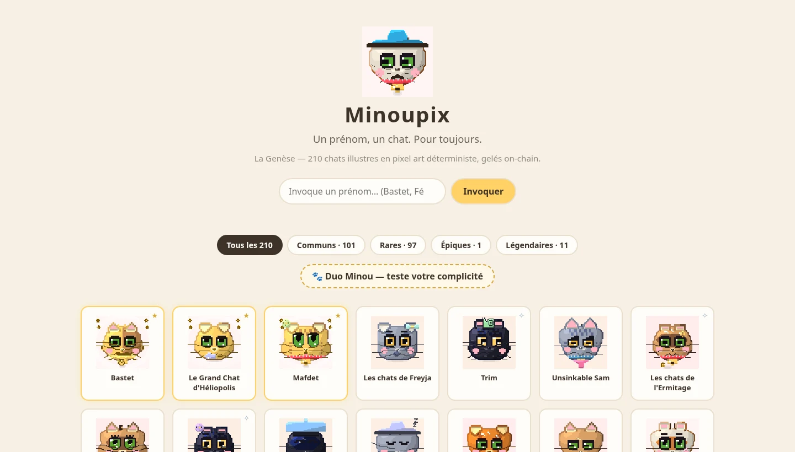
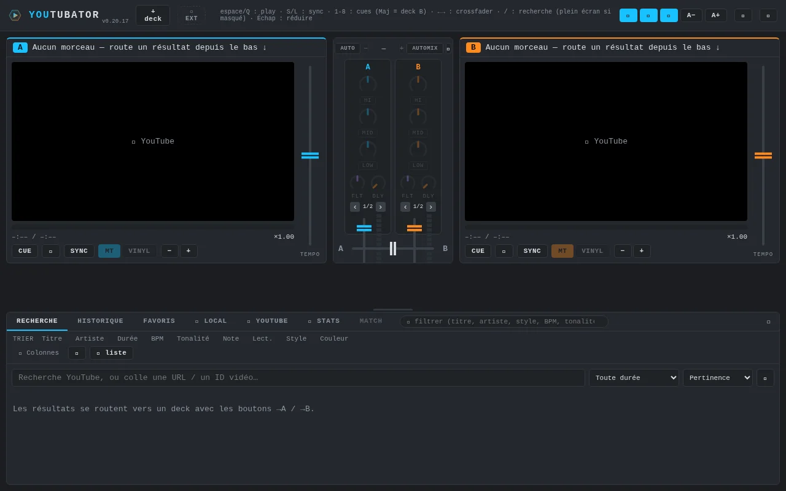
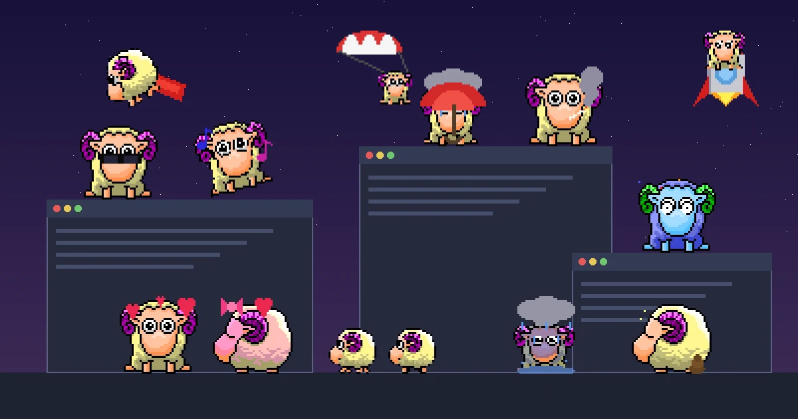
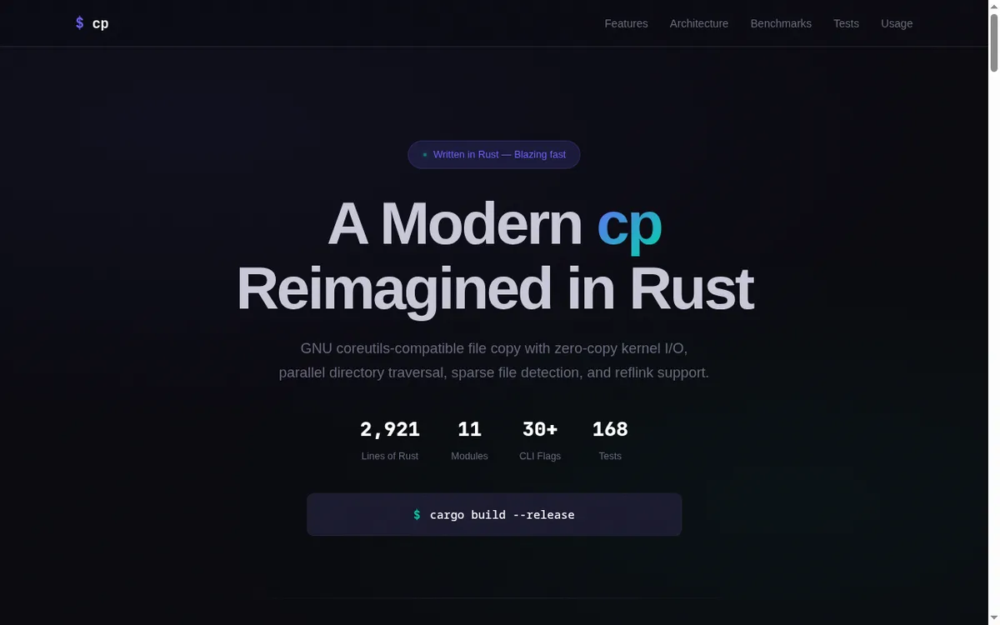

minoupix
Un prénom, un chat. Pour toujours. 🐱 Générateur de têtes de chat kawaii en pixel art, 100 % déterministe et hors-ligne : le prénom fait la graine, la graine fait tout — 29 robes, 12 humeurs, 36 accessoires, GIF qui respirent (étoiles qui scintillent, cœurs qui battent, Zzz des dormeurs). Devenu une collection NFT : la genèse de 210 chats illustres est sur Base, métadonnées IPFS gelées on-chain — et toute la genèse s'admire sur minoupix.com, chaque chat avec sa fiche en 11 langues. 354 tests.
pixel art
déterministe
NFT
Base

youtubator
Table de mixage DJ dans le navigateur : platines YouTube ou fichiers locaux. Automix réglable (mix harmonique, échange de basses, courbes de fondu), beatmatch automatique, EQ 3 bandes, boucles calées au beat, waveforms, MIDI. Démo en ligne.
beatmatch
Web Audio
MIDI
PWA

RustyPet
Animal de bureau pour GNOME Shell (Wayland) — portage Rust du légendaire eSheep. Le mouton tombe du ciel, atterrit sur tes fenêtres, arpente leurs toits… puis danse, fume, vole en superman, part en fusée, sort le parapluie sous son petit nuage — ou finit trempé. Le coup de foudre fait entrer la moutonne, deux agneaux trottinent derrière (multi-pets), on l'attrape à la souris, et il bêle discrètement 🐑💕🐑. Moteur pur testé sans écran, démon D-Bus + extension GNOME, les 28 pets d'origine compatibles.
GNOME Shell
Wayland
D-Bus
desktop pet
SysWall
Pare-feu applicatif Linux de bureau — l'équivalent de Little Snitch (macOS) ou GlassWire (Windows) : filtre par application plutôt que par IP/port. Identifie qui parle à qui via eBPF et conntrack, règles nftables granulaires (7 critères combinables, règles temporaires, priorités), autoapprentissage avec notifications, journal d'audit complet, garde anti-lockout. Interface Tauri + Svelte, thème cyber/neon. 358 tests, TDD, CI avec fuzzing et tests par propriétés.
pare-feu
nftables
eBPF
Tauri

cp
Implementation moderne de GNU cp en Rust. Zero-copy I/O, copie parallele, sparse files, reflink, 30+ flags CLI, 137 tests.
zero-copy
sendfile
reflink
parallel